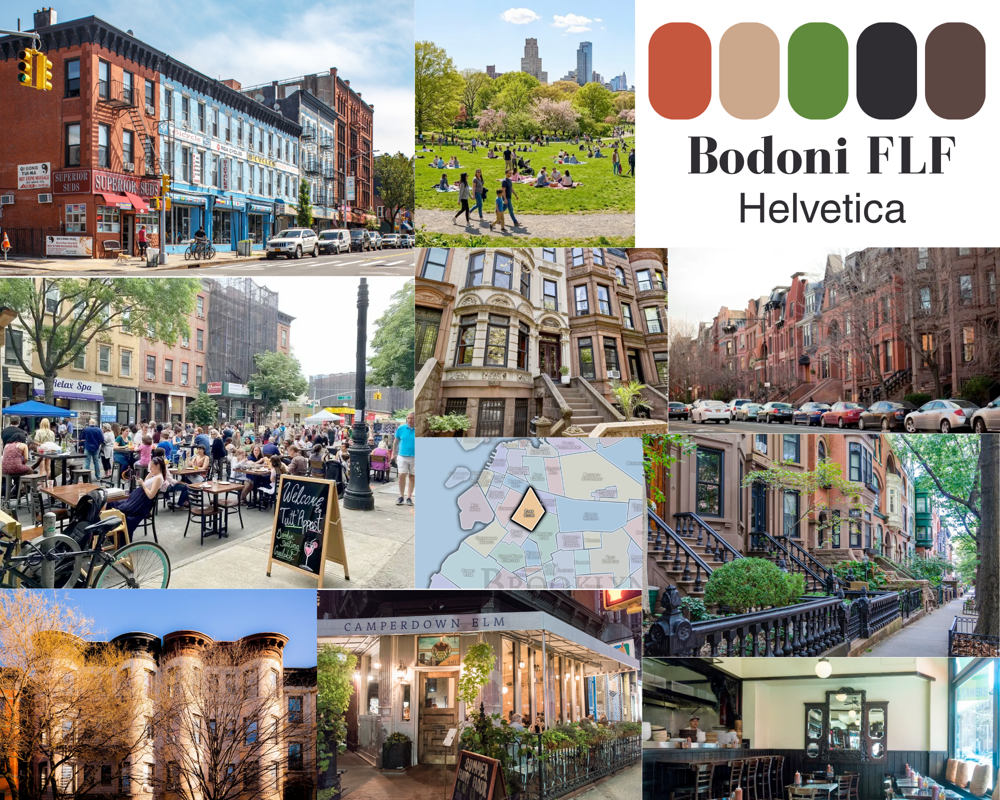
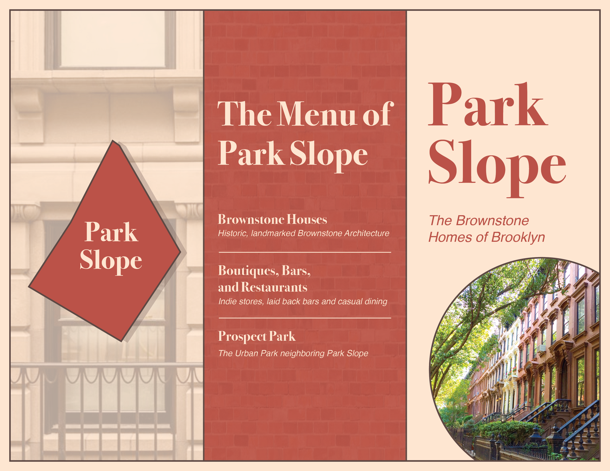
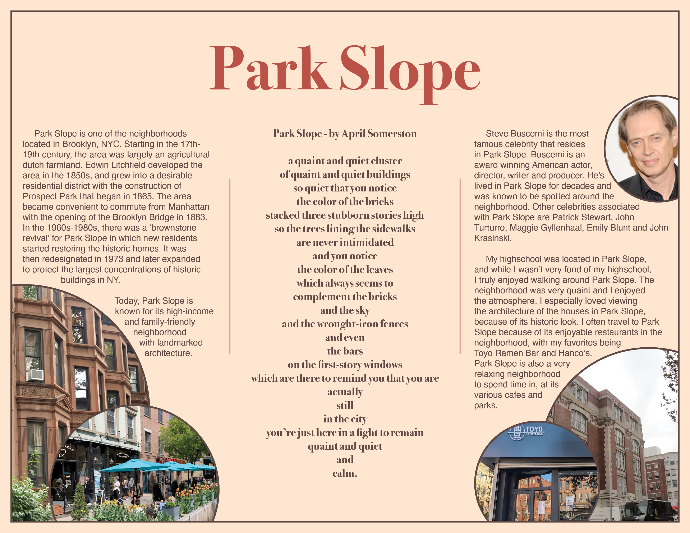

Park Slope Brochure
[2026]
Layout Design, Brochure Design
The Park Slope Brochure is a tri-fold design that highlights the neighborhood’s landmarks, history, notable celebrity connections, along with my personal relationship to Park Slope. It is intended to engage New York residents and visitors who may be interested in exploring the area. The brochure uses a vibrant red and soft yellow color palette to reflect Park Slope’s dynamic energy alongside its calmer, residential character.
The Process
Ideation
Targetted Audience
❖ New York Residents/Visitors
❖ People who want to explore Park Slope's main locations
Color Scheme:
Vibrant, yet soft color scheme.
Researching Park Slope:
❖ Mainly known for its brownstone architecture
❖ Includes various different boutiques, bars and restaurants
❖ It's most known locations are Grand Army Plaza, 7th Avenue, 5th Avenue, and its neighboring park, Prospect Park
❖ Friendly and natural atmosphere
❖ Known to be very family friendly
The brochure needs to successfully encapsulate the atmosphere and architecture of Park Slope, while also highlighting its main locations.
Mood-Board
To begin planning out the design, color scheme and typography for the brochure, I created a mood-board dedicated to these elements.

Drafting the Brochure
First Draft
While the first draft encapsulates the architecture of the brochure, both the color scheme and design of the brochure's pages doesn't properly portray Park Slope as a whole, especially for its atmosphere and locations. This draft also isn't very appealing to its targetted audience.


Final Draft
By revamping the entire design for the brochure, it now portrays the vibrant and calming aesthetics of Park Slope, while also highlighting its locations and architecture. The new design for the inside pages also has a playful effect that guides the reader throughout the page, grabbing their attention effectively.